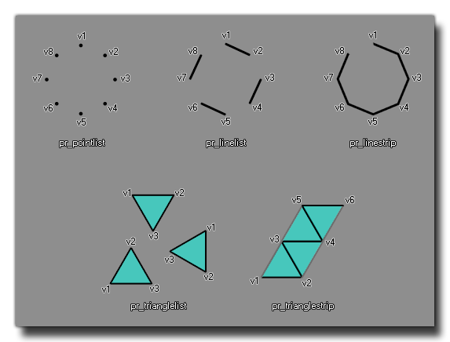

vertex_submit(buffer, primitive, texture);
| Argument | La description |
|---|---|
| buffer | Le tampon à utiliser. |
| primitive | Le type de base primitif. |
| texture | La texture à utiliser (ou -1 pour aucune texture). |
Retours: N / A
Vous pouvez utiliser cette fonction pour soumettre le contenu d'un tampon de vertex au pipeline graphique pour une utilisation avec un shader. Vous fournissez l'index de tampon à utiliser, le type de primitive de base à utiliser (voir les constantes ci-dessous) et la texture à utiliser. Le type primitif de base est uniquement utilisé pour affecter l'ordre dans lequel les vertex que vous avez stockés dans le tampon sont dessinés et connectés, mais les données réelles utilisées pour chacun des sommets seront celles que vous avez définies lors de la création du vertex buffer.
Pour un exemple visuel des différentes primitives de base disponibles, voir l'image ci-dessous: 
| Constant | La description |
|---|---|
| pr_pointlist | Une primitive consistant en une liste de points. |
| pr_linelist | Une primitive composée d'une ligne individuelle dans une liste. |
| pr_linestrip | Une primitive composée d'une bande de lignes consécutives. |
| pr_trianglelist | Une primitive composée de triangles individuels dans une liste. |
| pr_triangle_strip | Une primitive composée d'une bande de triangles consécutifs. |
shader_set(shader_prim);
vertex_submit(buff, pr_trianglelist,
sprite_get_texture(sprite_index));
shader_reset();
Le code ci-dessus soumettra le vertex buffer indexé dans la variable "buff" pour dessiner avec le shader "shader_prim", en utilisant une liste de triangles comme primitive de base et la texture de l'image-objet pour l'instance exécutant le code.